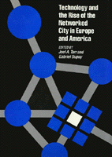

<body bgcolor="#FFFFFF" text="#000000" link="#0000FF" vlink="#CC0000" alink="#CC0000"><center><hr width="350" size="1" align="center" noshade>About technology’s vital role in shaping the urban environment<hr width="350" size="1" align="center" noshade><p><a href="https://cdcshoppingcart.uchicago.edu/Cart/ChicagoBook.aspx?ISBN=9780877225409&&PRESS=temple" target="_top">Buy this book!</a> | <a href="https://cdcshoppingcart.uchicago.edu/Cart/Cart.aspx?PRESS=temple" target="_top">View Cart</a> | <a href="https://cdcshoppingcart.uchicago.edu/Cart/Cart.aspx?PRESS=temple" target="_top">Check Out</a></p><p></p></center><!--none//--><h1>Technology and the Rise of the Networked City in Europe and America</h1>
<h3>edited by Joel A. Tarr and Gabriel Dupuy</h3>
<P>cloth 0-87722-540-0 $37.95, Sep 88, <FONT COLOR=#990033>Out of Print</FONT>
<BR> 360 pp
6&nbsp;figures 22&nbsp;halftones
</P><p>It is only within the last decade that historians have begun to pay serious attention to technology’s vital role in shaping the urban environment. Between approximately 1850 and 1930, cities in the industrialized world constructed a series of systems or networks to distribute water, wastewater, vehicles, energy, messages, and people. This collection of essays comprises the first book to trace the history and development of technological systems in European and American cities from the middle of the nineteenth century through World War II.
<BR>&nbsp;<h2>Contents</h2><P>
<p><b>Part I: Transportation</b>
<br>1. Comparative Perspectives on Transit in Europe and the United States, 1850-1914 &#150 John P. McKay
<br>2. Street Transport in the Second Half of the Nineteenth Century: Mechanization Delayed? &#150 Anthony Sutcliffe
<br>3. Economic Aspects of Public Transit in the Parisian Area, 1855-1939 &#150 Dominique Larroque
<br>4. Urban Pathways: The Street and Highway, 1900-1940 &#150 Clay McShane
<p><b>Part II: Water Systems</b>
<br>5. The Genesis of Water Supply, Distribution, and Sewerage Systems in France, 1800-1850 &#150 André Guillerme
<br>6. The Development of Water and Sewerage Systems in France, 1850-1950 &#150 Jean-Pierre Goubert
<br>7. Fire and Disease: The Development of Water Supply Systems in New England, 1870-1900 &#150 Letty Anderson
<p><b>Part III: Waste Disposal</b>
<br>8. Sewerage and the Development of the Networked City in the United States, 1850-1930 &#150 Joel A. Tarr
<br>9. Historical Origins and Development of a Sewerage System in a German City: Bielefeld, 1850-1904 &#150 Georges Knaebel
<br>10. Technology Diffusion and Refuse Disposal: The Case of the British Destructor &#150 Martin V. Melost
<p><b>Part IV: Energy. Heat, and Power</b>
<br>11. Urban Gas and Electric Systems and Social Change, 1900-1940 &#150 Mark H. Rose
<br>12. City Lights: The Electrification of the Chicago Region, 1880-1930 &#150 Harold L. Platt
<br>13. Municipalities as Managers: Heat Networks in Germany &#150 Roselyne Messager
<br>14. Utility Networks and Territory in the Paris Region: The Case of Andresy &#150 Gabriel Dupuy
<p><b>Part V: Communication</b>
<br>15. Cities and Communication: The Limits of Community &#150 Seymour J. Mandelbaum
<br>16. Telephone Networks in France and Great Britain &#150 Chantal de Gournay
</P><BR>&nbsp;<H2>About the Author(s)</H2>
<P><b>Joel A. Tarr</b> is Professor of History and Public Policy at Carnegie Mellon University.</P>
<P><b>Gabriel Dupuy</b> is a Professor at the Institut d'Urbanisme de Paris, University of Paris, and Chairman of the Transportation, Environment, and Urban Planning Department, Ecole Nationale des Ponts et Chaussés.</P>
<BR><H2>Subject Categories</H2>
<p><A HREF="/tempress/urban.html" TARGET="_top">Urban Studies</a>
</p>
<BR><h2 class="inpageheading">In the series</H2>
<P><I><a href="http://www.temple.edu/tempress/techno.html" onMouseOver="window.status='Click for other books in this series!'; return true;" onMouseOut="window.status=''; return true;" target="_top">Technology and Urban Growth</a></i>, edited by Blaine Brownell, Donald T. Critchlow, Mark S. Foster, Mark Rose, and Joel A. Tarr.
</p><p><i>Technology and Urban Growth</i>, edited by Blaine Brownell, Donald T. Critchlow, Mark S. Foster, Joel Tarr, and Mark Rose, focuses on the relationships between urban growth and change and developments in technological fields such as transport, utilities, and housing and office construction.</p>
<p align="center"><a href="https://cdcshoppingcart.uchicago.edu/Cart/ChicagoBook.aspx?ISBN=9780877225409&&PRESS=temple" target="_top">Buy this book!</a> | <a href="https://cdcshoppingcart.uchicago.edu/Cart/Cart.aspx?PRESS=temple" target="_top">View Cart</a> | <a href="https://cdcshoppingcart.uchicago.edu/Cart/Cart.aspx?PRESS=temple" target="_top">Check Out</a></p><p><font face="Arial" size="1"><a href="copyright.html" onMouseOver="window.status='Web Copyright Policy';return true;" onMouseOut="window.status=''" title="Web Copyright Policy">&copy;</a> 2015 <a href="http://www.temple.edu" target="new" onMouseOver="window.status='Link to Temple University home page';return true;" onMouseOut="window.status=''" title="Link to Temple University home page">Temple University</a>. All Rights Reserved. http://www.temple.edu/tempress/titles/437_reg.html</font></p>